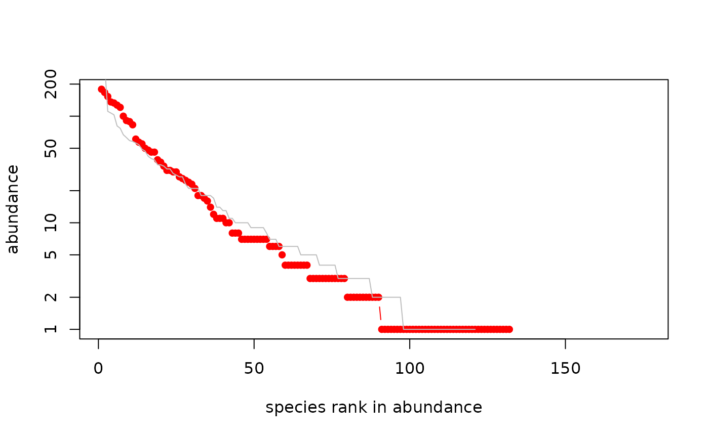

Dataset due to Saunders
saunders.RdA dataframe showing species inventories for a kelp holdfast
(saunders) including a Boolean flag indicating whether the
holdfast was in a sheltered or exposed location.
Also two data frames, one for the 20 exposed holdfasts
(saunders.exposed) and one for the 20 sheltered holdfasts
(saunders.sheltered).
Also three count objects, giving counts for all organisms
(saunders.tot), all those from exposed locations
(saunders.exposed.tot), and all those from sheltered locations
only (saunders.sheltered.tot).
Usage
data(saunders)Format
Dataset saunders is a dataframe with 40 observations on 177
variables. Each row corresponds to a holdfast. The first column is
Boolean, indicating whether or not that holdfast was exposed
(TRUE) or sheltered (FALSE). The other columns show
species abundances for each of 176 species.
Summary datasets saunders.sheltered.tot,
saunders.exposed.tot, and saunders.tot are objects of
class count that are the species abundance for sheltered
holdfasts, exposed holdfasts, and the entire dataset.
The user will probably be most interested in saunders.sheltered
and saunders.exposed, which are the transpose of the
appropriate rows of saunders. Thus these dataframes have 176
rows, one per species and 20 rows, one per holdfast.
Details
Kelp are large seaweeds classified in kingdom Chromista. Kelp grows in shallow oceans in kelp forests.
The holdfast is a root-like structure that anchors the kelp to the ocean floor. Fauna inhabiting kelp holdfasts, being “incredibly diverse” (Anderson et al 2005), are often used as indicators of environmental change.
The data was collected in New Zealand, from eight sites along the Leigh coastline from north of Leigh Harbour down to the southern end of Kawau Island (a stretch of roughly 20 km). Four sites were wave-exposed, four were sheltered (although two of the latter were arguably quite tidally-dominated). Each site had a spatial extent of roughly one hectare. They were collected from 5 - 10 November, 2003.
The saunders dataset must be arranged as it is because if it
were transposed, the first row would be the (nonsensical) observation
c(T,T,...,T,F,...,F).
Note
It is not entirely obvious how to derive the summary datasets from the
saunders dataframe. Use function extractor() for this.
References
J. Saunders 2007. “Biodiversity of kelp holdfasts” (provisional title). PhD thesis (in preparation); School of Geography and Environmental Sciences, The University of Auckland
M. J. Anderson and others 2005. “Consistency and variation in kelp holdfast assemblages: Spatial patterns of biodiversity for the major phyla at different taxonomic resolutions”. Journal of Experimental Marine Biology and Ecology. Volume 320, pages 35-56
Examples
data("saunders")
jj <- t(saunders)[-1,]
jj.exposed <- saunders[,1]
"saunders.tot" <- count(apply(jj,1,sum))
"saunders.exposed" <- jj[, jj.exposed]
"saunders.sheltered" <- jj[,!jj.exposed]
"saunders.exposed.tot" <- count(apply(saunders.exposed,1,sum))
"saunders.sheltered.tot" <- count(apply(saunders.sheltered,1,sum))
plot(saunders.sheltered.tot, uncertainty=TRUE, n=1)
#> Warning: 44 y values <= 0 omitted from logarithmic plot

preston(saunders.tot)
#> 1 2 3-4 5-8 9-16 17-32 33-64 65-128 129-256 257-512
#> number of species 42 14 21 22 13 20 15 11 11 5
#> 513-1024 1025-Inf
#> number of species 1 1
optimal.params.sloss(saunders.exposed)
#> $theta
#> [1] 28.52424
#>
#> $m
#> [1] 0.040349346 0.027906106 0.035745262 0.020890392 0.037968216 0.027071664
#> [7] 0.026166268 0.009891326 0.015670728 0.008559140 0.045414066 0.022966887
#> [13] 0.034808129 0.040139139 0.056193112 0.020022698 0.008357949 0.006685073
#> [19] 0.025335928 0.022986263
#>
#> $I
#> [1] 28.0866408 7.4925823 18.3127536 4.6939446 23.3642840 5.9545353
#> [7] 7.3621986 0.4595465 1.7034624 0.6388443 26.9272364 4.7483665
#> [13] 19.0775540 15.4725359 29.5907744 3.8207461 0.5478456 0.3297731
#> [19] 5.2508937 6.2581986
#>